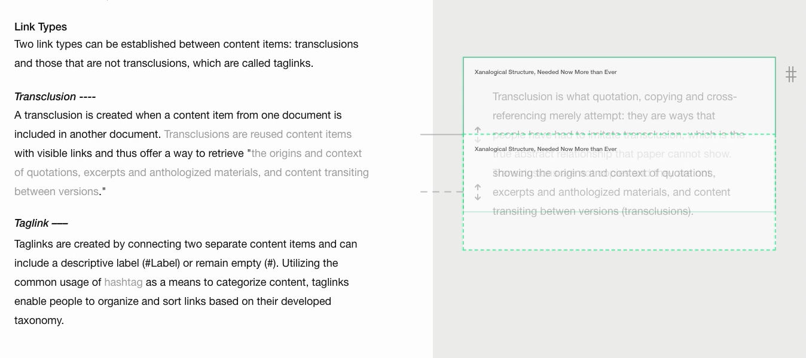
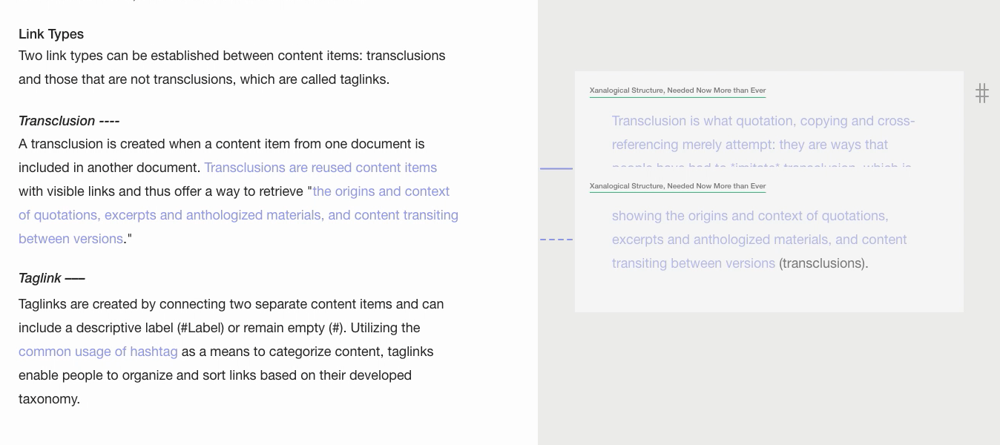
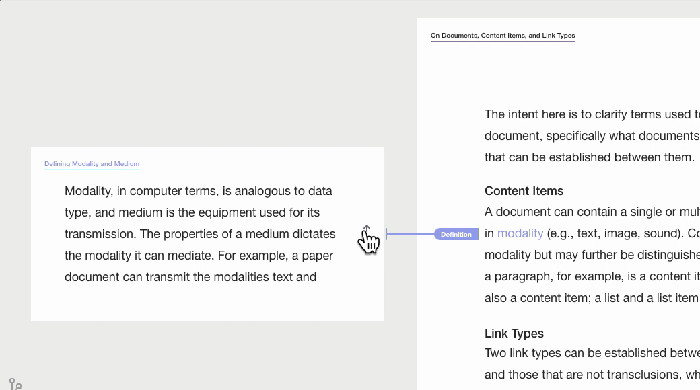
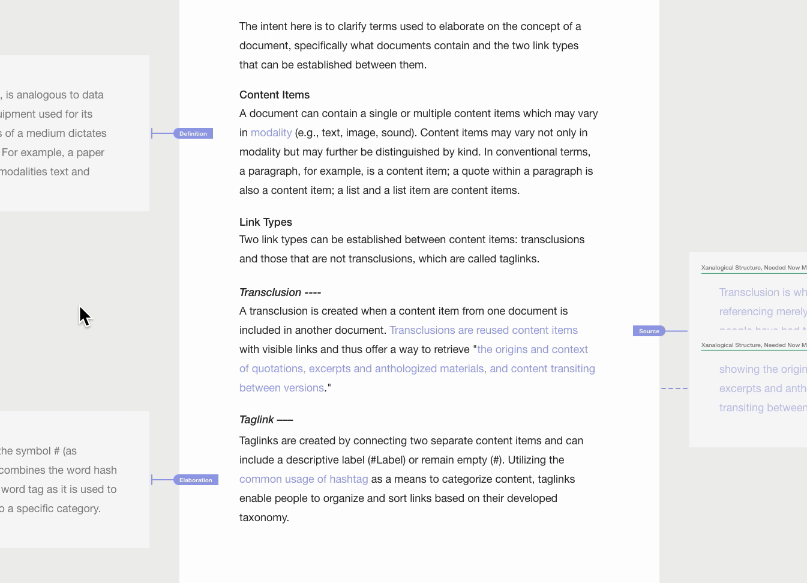
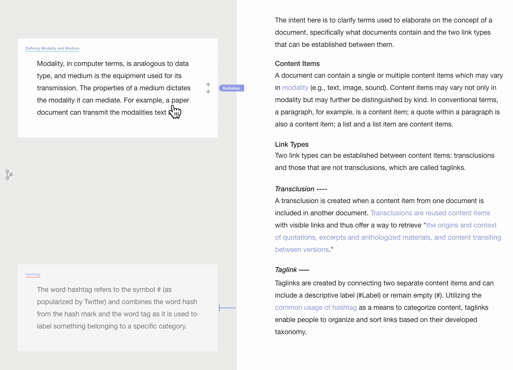
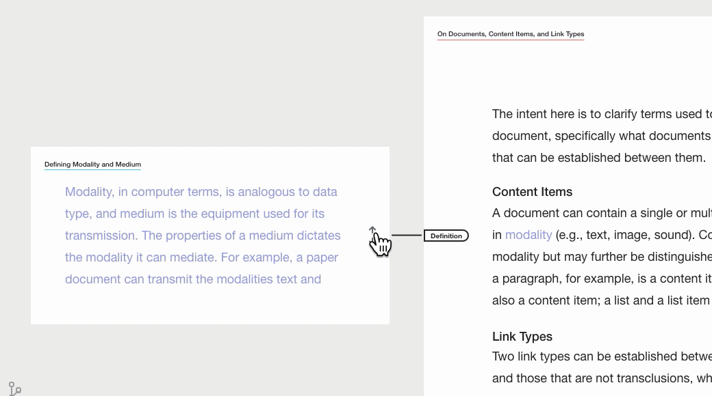

Prototyping: Visual Coding of Elements in Lateral Mode
The attempt here is to finalize the design of the visual elements in Lateral Mode. The main design challenges involve the color-coding of different categories of information, and how cursor events change the display states.
Color-Coding of Multiple Instances of the Same Document
In designing Lateral Mode, one of the challenges is how to indicate multiple instances of the same document. A color-coded border around the preview component is implemented in the first image. In the second image, a color-coded title underline is implemented.


The Position and Visual Implementation Taglink Labels
A second challenge is (beyond visually distinguishing link types) visually indicating (1) the link direction and (2) whether the link points to a particular content item within a document or the entire document.
In the examples below, the taglink points from a particular content item of the open document (middle) to the entire preview document (left). Specifically, the word modality is linked to the entire document called Defining Modality and Medium. The direction of the taglink is visually indicated by the label Definition. The three images below show variations of the position of the label. The third image is deemed optimal because the visual information is separated into two categories and two cursor events.

In the above below, whether the link points to a particular content item within a document or the entire document is shown while not hovering, and while hovering additionally shows the link direction and the label.

In the image above, all information categories are visible while not hovering.

In the image above, while not hovering shows whether the link points to a particular content item within a document or the entire document, and while hovering hides the previous information and shows the link direction and the label.
Interactive Implementation
In the interactive implementation below, select the expand icon to enter full screen.
Failed Attempts
Transition animation:
[insert reflection]
Color-coding of taglink label: 
[insert reflection]